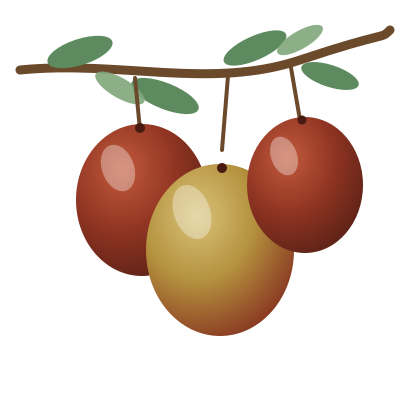

설명할 수 있는 과일
좋은 과일은 설명할 수 있어야 합니다. 어떤 기준으로 고르고 어떻게 담았는지 숨김없이 알려 드립니다.
좋은 과일은 설명할 수 있어야 합니다.
크기와 무게, 수확 정보까지 투명하게 알려 드리고 보내 드립니다.

대표 상품 사진 교체 예정과일 한 상자를 보내는 일은 한 번의 거래가 아니라 신뢰를 쌓는 일이라고 생각합니다.
좋은 과일은 설명할 수 있어야 합니다. 어떤 기준으로 고르고 어떻게 담았는지 숨김없이 알려 드립니다.
등급 기준, 상자 중량, 수확일과 발송일을 상품과 함께 안내합니다. 직접 비교하고 결정하실 수 있도록요.
한 번의 구매가 오래가는 인연이 되도록, 받으신 상품에 문제가 있으면 끝까지 책임지고 응대합니다.
같은 대추라도 쓰임은 다릅니다. 선물인지, 집에서 드실 것인지에 맞춰 고르세요.
실제 수치는 수확 후 상품별로 기재합니다. 위 내용은 공개 항목을 보여 드리기 위한 양식입니다.
받아 보시기 전에 무엇이 들어 있는지 알 수 있어야 한다고 생각합니다.
현재는 예약 신청과 문의를 받은 뒤, 농장에서 직접 확인 연락을 드리는 방식으로 운영합니다.
원하시는 등급과 수량, 받으실 시기를 남겨 주세요.
물량과 가격, 결제 방법을 직접 안내해 드립니다.
등급 기준에 맞춰 고르고 중량을 확인해 담습니다.
발송일과 수확 정보를 함께 알려 드립니다.
생대추는 실온에 두면 금방 무르기 쉽습니다. 받으신 날 냉장고에 넣어 주세요.
미리 씻어 두면 물기 때문에 쉽게 상합니다. 드실 만큼만 꺼내 씻어 드세요.
한 번에 다 드시기 어려우면 말리거나 손질해 냉동하는 방법도 있습니다.
현재는 예약 신청·문의를 받은 뒤 농장에서 직접 연락드려 결제 방법을 안내하고 있습니다.
선물 특품, 상품, 가정용 실속 세 가지로 나눕니다. 자세한 기준은 상품 등급에서 확인하세요.